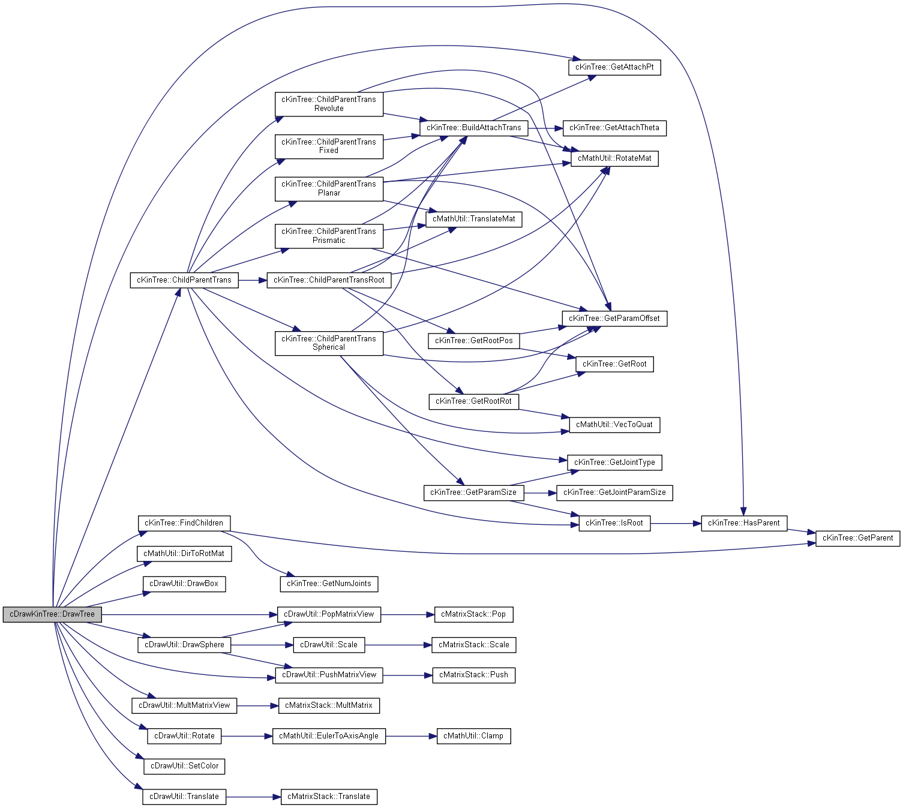

#include <DrawKinTree.h>
Static Public Member Functions | |
| static void | Draw (const Eigen::MatrixXd &joint_desc, const Eigen::VectorXd &pose, double link_width, const tVector &fill_col, const tVector &line_col) |
| static void | DrawTree (const Eigen::MatrixXd &joint_desc, const Eigen::VectorXd &pose, int joint_id, double link_width, const tVector &fill_col, const tVector &line_col) |
Detailed Description
Definition at line 6 of file DrawKinTree.h.
Member Function Documentation
◆ Draw()
|
static |
Definition at line 7 of file DrawKinTree.cpp.
References DrawTree(), cKinTree::GetRoot(), and cDrawUtil::SetLineWidth().
Referenced by cDrawCharacter::Draw(), and cDrawCharacter::DrawPose().
Here is the call graph for this function:

Here is the caller graph for this function:

◆ DrawTree()
|
static |
Definition at line 14 of file DrawKinTree.cpp.
57 cDrawUtil::SetColor(tVector(fill_col[0] * 0.25, fill_col[1] * 0.25, fill_col[2] * 0.25, fill_col[3]));
References cKinTree::ChildParentTrans(), cMathUtil::DirToRotMat(), cDrawUtil::DrawBox(), cDrawUtil::DrawSphere(), cDrawUtil::eDrawSolid, cDrawUtil::eDrawWireSimple, cKinTree::FindChildren(), cKinTree::GetAttachPt(), cKinTree::gInvalidJointID, cKinTree::HasParent(), cDrawUtil::MultMatrixView(), cDrawUtil::PopMatrixView(), cDrawUtil::PushMatrixView(), cDrawUtil::Rotate(), cDrawUtil::SetColor(), and cDrawUtil::Translate().
Referenced by Draw().
Here is the call graph for this function:

Here is the caller graph for this function:

The documentation for this class was generated from the following files:
- F:/MotionDev/DmmRec/test0815/DeepMimic/DeepMimicCore/render/DrawKinTree.h
- F:/MotionDev/DmmRec/test0815/DeepMimic/DeepMimicCore/render/DrawKinTree.cpp